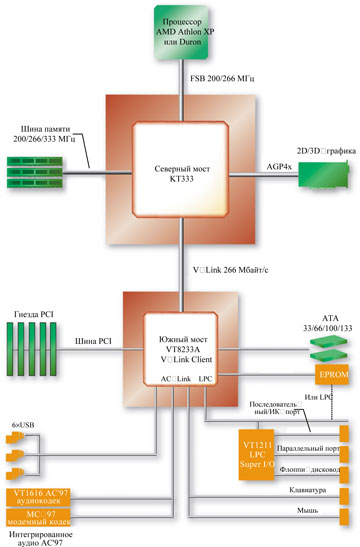
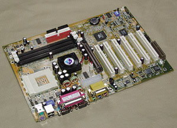
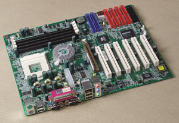
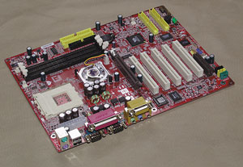

Олег Денисов, Сергей Назаров
VIA Apollo KT333 — это следующий после Apollo KT266A набор микросхем для процессоров Athlon XP, Athlon и Duron, разработанный компанией VIA (http://www.via.com.tw). Конструктивно он отличается от предшественника тем, что в нем используются новые микросхемы северного (VIA VT8367) и южного мостов (VIA VT8233A или VT8235), а функционально — добавленной поддержкой памяти DDR333 SDRAM и IDE-интерфейса Ultra ATA/133. Кроме того, число портов USB 1.1 уменьшилось с шести до четырех (у VIA VT8233A — два встроенных двухпортовых контроллера USB 1.1) или же вместо них появились шесть портов USB 2.0 (у VIA VT8235 — три встроенных двухпортовых контроллера USB 2.0). Отметим, что в принципе в VIA Apollo KT333 роль южного моста могут выполнять «старые» микросхемы VT8233/VT8233C, разработанные еще для VIA Apollo KT266A, однако на практике производители системных плат предпочитают более современные VIA VT8233A и VIA VT8235.
|  | Блок-схема набора микросхем VIA Apollo KT333.
|
Итак, по сути, главное отличие VIA Apollo KT333 от VIA Apollo KT266A в том, что появилась поддержка более быстрой памяти DDR333 SDRAM, которая по пропускной способности опережает предшествующую ей DDR266 SDRAM примерно на 30% (соответственно 2700 и 2100 Мбайт/с). Однако на практике замена памяти DDR266 на DDR333 SDRAM не дает большого выигрыша в производительности — из-за того, что при использовании памяти DDR333 шина памяти и системная шина работают асинхронно (с частотой соответственно 166 и 133 МГц) и возможности ОЗУ используются неэффективно, в то время как память DDR266 работает синхронно с системной шиной. Так, в тестах на скорость работы ОЗУ из пакета SiSoft Sandra типичный прирост производительности составлял всего 2—7%, а в некоторых случаях скорость работы даже снижалась! А в тесте CC Winstone, который предназначен для измерения быстродействия ПК при работе с популярными мультимедиа-приложениями и ПО для создания Web-контента, выигрыш не превышал 2—3%!
Таким образом, потенциал «скорострельности» памяти DDR333 будет реализован только тогда, когда тактовая частота системной шины процессора Athlon XP увеличится до 166 МГц — в противном случае разницу в скорости работы памяти DDR266 и DDR333 SDRAM пользователь, в общем-то, не ощутит.
Несмотря на то, что Athlon XP уже давно оснащается встроенным термодиодом, который измеряет температуру его ядра, системные платы, использующие этот термодиод по назначению и оборудованные соответствующими подсистемами мониторинга температуры ядра процессора и автоматической остановки работы последнего в случае перегрева, начали появляться на рынке только в последнее время. Поэтому пока лишь некоторые системные платы под Athlon XP могут работать со встроенным в него термодиодом, и на это обстоятельство нужно обязательно обращать внимание при выборе системной платы, поскольку система защиты Athlon XP от перегрева, построенная на базе этого термодиода, значительно эффективнее, чем система на основе термодатчика, распаянного на плате под процессором.
Методика тестированияДля определения общей производительности системы мы пользовались пакетом ZD Content Creation Winstone 2002 1.0.1, который предназначен для измерения быстродействия ПК при работе с популярными мультимедиа-приложениями и ПО для создания Web-контента. Производительность графической подсистемы при работе с 3D-играми измерялась средствами пакета MadOnion 3DMark2001 SE. Для измерения быстродействия видеоподсистемы при работе с двухмерной графикой мы использовали интегральные тесты Business Graphics WinMark 99 и High-End Graphics WinMark 99, а дисковой подсистемы — тесты High-End Disk WinMark 99 и Business Disk WinMark 99. Эти тесты из пакета ZD WinBench 99 2.0 измеряют производительность соответствующих подсистем при работе с наиболее распространенными High-End и офисными программами. Для оценки скорости работы процессора и подсистемы памяти использовались тесты из состава ПО SiSoft Sandra Standard 2002.1.8.59. В дополнение к этому при помощи пакета WCPUID 3.0g мы измеряли тактовые частоты ядра процессора, системной шины и шины памяти. Отметим, что мы проверяли, насколько тактовая частота системной шины отклоняется от номинального значения, определенного в спецификации процессора (в данном случае 133,33 МГц), поскольку ее завышение снижает надежность работы компонентов ПК и сокращает срок их эксплуатации. Если тактовая частота системной шины была равна или больше 134,00 МГц, то это считалось серьезным нарушением стандарта, и общая оценка качества системной платы снижалась. Чтобы проверить системные платы на наличие дополнительного «запаса прочности», выполнялся тест на стабильность работы в режиме разгона. Частота системной шины увеличивалась примерно до 140 МГц, после чего снова выполнялись все тесты на скорость работы системы. Если при этом обнаруживались проблемы, то тактовая частота системной шины последовательно снижалась до тех пор, пока они не исчезали. Все тесты выполнялись под управлением ОС Microsoft Windows XP Professional Build 2600 при видеорежиме с разрешением 1024×768, глубиной цвета 32 бит и частотой кадровой развертки 85 Гц, за исключением тестов из пакета MadOnion 3DMark2001 SE. Последние выполнялись при разрешении 1280x1024, глубине цвета 32 бит и отключенном Vsync. Для проведения испытаний мы использовали следующее стендовое оборудование: процессор AMD Athlon XP 1900+ (тактовая частота ядра 1,6 ГГц), модули памяти DDR266/DDR333 SDRAM емкостью 256 Мбайт, графический адаптер ASUS AGP-V8200 на наборе микросхем NVIDIA GeForce3 с 64 Мбайт видеопамяти и жесткий диск IBM IC35L080AVVA07 емкостью 80 Гбайт. Характеристики протестированных плат приведены в табл. 1, а основные результаты тестирования — в табл. 2 и 3. |
ABIT AT7
Среди протестированных плат AT7, пожалуй, лидировала по оснащенности благодаря дополнительным встроенным контроллерам: это сетевой, четырехпортовый USB 2.0 контроллер VIA VT6206 (поэтому в сумме у платы 10 USB-портов — шесть стандартных USB 1.1 и четыре USB 2.0), четырехканальный IDE RAID-контроллер (к нему можно подключить до восьми IDE-устройств; кстати, в системные платы, как правило, встраиваются двухканальные IDE RAID-контроллеры, обеспечивающие подключение только четырех IDE-устройств) и контроллер IEEE-1394 с двумя внешними и одним внутренним портами. Кроме того, AT7 имеет качественную звуковую подсистему с оптическим S/PDIF-выходом и полным набором аудиоразъемов для подключения внешней шестиканальной акустики.
Однако следует подчеркнуть, что у AT7 нет разъемов для подключения PS/2-мыши и PS/2-клавиатуры, а также принтерного и последовательных портов, поэтому с платой невозможно работать без USB-клавиатуры и USB-мыши, равно как нельзя и подключить к ней принтер с параллельным или модем с последовательным интерфейсом. Подобный подход, в общем-то, понятен — разработчики AT7 предлагают пользователям решение, где применяется только современная USB-периферия (именно поэтому количество USB-портов увеличено до десяти), взамен периферийных устройств с медленными и морально устаревающими интерфейсами. Но почему они решили также отказаться от Game/MIDI и инфракрасного порта, которых у AT7 не оказалось, для нас осталось загадкой.
Среди других конструктивных достоинств AT7 — наличие пяти разъемов питания для вентиляторов (обычно их только три) и защелки для фиксации AGP-платы, отличные возможности разгона системы средствами программы настройки BIOS и стабильная работа в режиме разгона (AT7 успешно прошла соответствующий тест), наличие в BIOS средств загрузки системы с USB-устройств (флоппи-дисковода, ZIP-дисковода, CD-накопителя, жесткого диска) и назначения прерываний (IRQ) PCI-устройствам. Попутно отметим хорошую техническую поддержку AT7 на Web-узле изготовителя и качественное руководство пользователя.
Разводка AT7, к сожалению, продумана недостаточно хорошо. Неудачно размещены IDE RAID-разъемы, которые «перекрывают» гнезда PCI № 1 и 2 и не позволяют установить в них полноформатные платы расширения (кстати, AT7 оснащена только тремя PCI-гнездами — это следствие большого количества дополнительных встроенных контроллеров). DIMM-гнезда размещены близко к AGP-гнезду (защелки на них мешают устанавливать видеоплату), неудобно расположены разъем ATX-питания (зажат между конденсаторами и разъемами питания для вентиляторов) и FDC-разъем (в нижнем правом углу платы), у которого, помимо этого, не пропущена ножка в ключевой позиции.
К конструктивным недостаткам AT7 также следует отнести отсутствие дополнительной цветовой маркировки у IDE- и FDC-разъемов и невозможность работы со средствами HDD S.M.A.R.T. в BIOS.
Показатели AT7 в тестах на скорость работы блестящими не назовешь. Несмотря на то, что в интегральном тесте CC Winstone ее производительность была на среднем уровне, в тестах на скорость работы дисковой и графической подсистемы результаты этой платы были весьма скромными: 3DMark2001, High-End Graphics WinMark и Business Disk WinMark — ниже среднего, High-End Disk WinMark — предпоследнее место, Business Graphics WinMark — последнее.
Как и следовало ожидать, AT7 — дорогая плата, что, по нашему мнению, вполне оправданно, если, конечно, вам нужно готовое решение для сборки многофункциональной системы. Отметим также, что AT7 упаковывается в коробку с футбольной символикой и комплектуется весьма оригинальным призом — надувным резиновым мячом, оформленным в том же стиле.
Acorp 7KT333
Главная отличительная особенность 7KT333 — внешняя коммуникационно-диагностическая панель Smart Panel II, входящая в комплект поставки системной платы. Эта панель оснащена светодиодными индикаторами для отображения POST-кодов во время загрузки системы, одним последовательным и двумя USB-портами, тремя звуковыми разъемами (Line-Out, Line-In, Mic-In) и кнопкой для переключения ПК в состояние ожидания. Панель устанавливается в 5-дюймовый отсек системного блока и подключается к системной плате с помощью размещенных на ней четырех специальных разъемов.
В остальном 7KT333 обеспечивает обычные возможности расширения — шесть PCI-гнезд, два внешних и два внутренних порта USB 1.1. Можно даже сказать, что эти возможности минимальны, поскольку разработчики 7KT333 (очевидно, стремясь снизить стоимость этой платы) встроили в нее простую звуковую подсистему без S/PDIF-интерфейса, не позволяющую подключать шестиканальную акустику, и не оснастили ее дополнительными контроллерами — например, сетевым или RAID.
По-видимому, с той же целью — снизить затраты на изготовление — функциональность BIOS 7KT333 несколько урезана, так что ее BIOS не позволяет назначать прерывания PCI-устройствам и не может работать со средствами HDD S.M.A.R.T., а также обеспечивает разгон системы только по тактовой частоте системной шины и не дает возможности контролировать напряжение питания ядра процессора и модулей памяти (впрочем, тест на стабильность работы в режиме разгона 7KT333 прошла успешно).
Дизайн 7KT333, по нашему мнению, продуман недостаточно — защелки на DIMM-гнездах мешают устанавливать AGP-плату; IDE- и FDC-разъемы не позволяют установить «длинные» платы расширения в гнезда PCI №2, 3 и 4; AGP-гнездо не оборудовано защелкой для фиксации видеоплаты; неудобно расположен разъем ATX-питания — зажат окружающими его конденсаторами.
Тактовая частота системной шины 7KT333 довольно сильно занижена (132,95 МГц), однако во всех без исключения тестах на скорость работы производительность была на среднем уровне.
Принимая во внимание рекордно низкую цену этой платы, неплохую производительность в тестах, наличие запаса прочности по разгону, богатый комплект поставки, а также хорошую техническую поддержку на Web-узле производителя и подробное руководство пользователя, 7KT333 можно рекомендовать для построения дешевых ПК начального уровня.
Albatron KX400+
|  |  |
Возможности расширения у KX400+ вполне обычны — эта плата не оснащена никакими дополнительными встроенными контроллерами, но в то же время имеет все необходимое для построения систем самого разного назначения: четыре порта USB 1.1 (два внешних и два внутренних), шесть PCI- и одно CNR-гнездо и качественную шестиканальную звуковую подсистему с S/PDIF-входом/выходом (планка для вывода наружу S/PDIF-портов приобретается дополнительно).
Нам очень понравился хорошо продуманный и аккуратный дизайн KX400+, при изготовлении которой используется ряд оригинальных ноу-хау, разработанных ее производителем. Во-первых, это технология защиты Athlon XP от перегревания — Over Temperature Protection: температура процессора измеряется с помощью встроенного в него термодиода, а не средствами термодатчика, распаянного на плате под процессором; правда, по данным AMD, эта технология поддерживается только в платах KX400+ модификации 1.1 и выше. Далее можно назвать подсистему голосового воспроизведения диагностических сообщений во время загрузки системы Voice Genie, технологию автоматического восстановления тактовой частоты системной шины Watch Dog Timer (если после ручной установки частоты системной шины средствами программы настройки BIOS системная плата «зависает» во время загрузки системы, то система будет автоматически перегружена, а частота системной шины при этом будет выставлена в соответствии со спецификацией процессора) и технологию Mirror BIOS дублирования микросхемы с программным кодом BIOS. Причем микросхема, из которой будет считываться код BIOS, выбирается вручную с помощью переключателя на плате, и это надежнее автоматического «переключения» рабочей микросхемы с кодом BIOS, как происходит, например, у плат Gigabyte, оснащенных технологией DualBIOS; правда, KX400+ оснащается этой технологией дополнительно, так что на тестировавшемся образце этой платы вторая микросхема BIOS не была распаяна.
Среди конструктивных достоинств KX400+ отметим также наличие защелки для фиксации AGP-платы, удобное расположение ATX-, IDE- и FDC-разъемов, возможность контроля распределения прерываний между PCI-устройствами с помощью программы настройки BIOS и работы в BIOS со средствами HDD S.M.A.R.T. Из недостатков можно назвать близкое взаимное расположение DIMM- и AGP-гнезд (защелки на DIMM-гнездах мешают устанавливать видеоплату), блокирование доступа к разъему S/PDIF-In/Out платами, установленными в гнезда PCI № 2 и 3, отсутствие цветовой маркировки у FDC-разъема и индикации текущей рабочей тактовой частоты шины памяти (ее значение не высвечивается на экране во время загрузки системы и не отображается в программе настройки BIOS).
KX400+ успешно прошла тест на выживание в режиме «оверклокинга» и обладает хорошими возможностями для разгона, обеспечивая управление тактовой частотой системной шины и напряжением питания ядра процессора и модулей памяти. Однако для «тонкой» настройки разогнанной системы ей не хватает контроля тактовой частоты PCI/AGP-шины.
KX400+ отлично зарекомендовала себя в тестах на скорость работы и в целом по производительности была одной из самых быстрых среди протестированных плат: High-End Disk WinMark — 1-е место, Business Disk WinMark — 4-е, CC Winstone — 6-е, 3DMark2001, Business Graphics WinMark и High-End Graphics WinMark — результативность на среднем уровне. Подчеркнем, что при этом тактовая частота системной шины у KX400+ строго соответствовала стандарту (133,30 МГЦ) и практически совпадала с номиналом (133,33 МГц).
Хорошие возможности для расширения системы, грамотный дизайн, повышенная надежность работы BIOS благодаря дублированию его программного кода, достаточный «запас прочности» для разгона системы, отлично подготовленная документация, хорошая техническая онлайновая поддержка и, что немаловажно, весьма привлекательная цена — все это послужило основанием для того, чтобы отметить KX400+ знаком отличия «Выбор редакции BYTE/Россия».
KX400+ — это пример отлично спроектированной системной платы для сборки серийных компьютеров, и ее можно смело рекомендовать в этом качестве.
AOpen AK77-333
Системные платы производства AOpen известны прежде всего тем, что традиционно оснащаются оригинальными технологиями, разработанными компанией-изготовителем, и AK77-333 лишний раз подтверждает это правило. В ней используются технологии вывода изображения на экран во время загрузки системы Vivid BIOS (вывод графики и текста организуется параллельно и независимо друг от друга, причем пользователь может легко изменить графическую заставку с помощью специального ПО, заменив ее статическим или анимированным GIF-файлом), проигрывания компакт-дисков под управлением BIOS с помощью графического интерфейса Open JukeBox Player (программный код для проигрывания дисков загружается и исполняется средствами BIOS, поэтому отпадает необходимость в операционной системе, а графический интерфейс программного CD-плеера «прорисовывается» средствами Vivid BIOS). Применена также технология автоматического восстановления тактовой частоты системной шины Watch Dog Timer: если во время инициализации системной платы, последовавшей после ручной установки частоты системной шины в программе настройки BIOS, POST-процедура самотестирования платы не завершается успешно в течение 5 с, то системная плата будет автоматически реинициализирована (перегружена), а частота системной шины при этом будет выставлена в соответствии со спецификацией процессора. Порт клавиатуры и USB-порты защищены от перегрузки и короткого замыкания с помощью автоматического предохранителя Resettable Fuse — такой предохранитель не перегорает при перегрузке, а автоматически «выбивается», разрывая перегруженные цепи питания, после чего для восстановления их работоспособности достаточно включить его вручную. Технология «безбатарейной» работы Battery-Less Design подразумевает, что содержимое CMOS системной платы дублируется в EEPROM-микросхеме, так что после перебоя в питании все настройки BIOS считываются из нее и восстанавливаются автоматически — за исключением, конечно, системного времени, которое нужно выставлять вручную, поэтому плата может нормально функционировать без батарейки. Индикация процесса инициализации системной платы Dr. LED организована так: во внешний 5-дюймовый отсек корпуса устанавливается блок Dr. LED (приобретается дополнительно и подключается к специальному разъему на системной плате) с восемью светодиодными индикаторами — CPU, Memory, Video, PCI, Audio, HDD, KB, Boot O.K; первые семь индикаторов загораются во время инициализации соответствующих устройств (процессора, ОЗУ, видеоплаты, PCI-устройств, звуковых контроллеров, жестких дисков и клавиатуры), причем инициализация устройств и включение индикаторов происходит в указанном порядке, а последний, восьмой, включается после успешной инициализации системной платы. Если же плата «зависает» на каком-то этапе, то по последнему загоревшемуся индикатору можно судить о причине, не позволившей ей нормально инициализироваться. И последняя технология — это дублирование программного кода BIOS (Die-Hard BIOS), на котором стоит остановиться подробнее.
Die-Hard BIOS — это аналог технологии DualBIOS от Gigabyte. Впрочем, Die-Hard BIOS реализована несколько иначе и, по нашему мнению, работает надежнее, чем DualBIOS. Суть ее в том, что системная плата оснащается двумя микросхемами с BIOS, которые в терминологии AOpen называются BIOS ROM и Rescue ROM. В первой находится код BIOS, с которого система грузится при нормальной работе и который можно перезаписать программными средствами. В микросхеме Rescue ROM находится код BIOS, с которого система грузится в аварийной ситуации и который не перезаписывается программно. И в этом заключается преимущество технологии Die-Hard BIOS перед аналогичной разработкой Gigabyte — там программный код, хранящийся в микросхеме с резервной копией BIOS, легко перезаписывается с помощью ПО. А это в ряде случаев все же приводит к тому, что программный код в обеих микросхемах BIOS оказывается затертым, а системная плата — неработоспособной.
В случае AK77-333 выбор микросхемы, с которой будет осуществляться загрузка BIOS, делается с помощью специальной перемычки JP30, которая имеет два положения — Normal и Rescue. Заметим, что в базовой модификации AK77-333 на плате распаивается только колодка под микросхему Rescue ROM — сама микросхема отсутствует, и ее нужно заказывать дополнительно.
Кроме того, пользователь может дополнительно приобрести скобу-расширитель Die-Hard BIOS. На ней расположен трехпозиционный тумблер, который подключается кабелем к контактной колодке JP30 вместо обычной двухконтактной перемычки и может быть установлен в одно из трех положений: Normal — в этом случае система грузится с рабочей перепрошиваемой версии BIOS; Rescue — загружается программный код из микросхемы с резервной неперепрошиваемой копией BIOS; Lock — при таком положении тумблера обе микросхемы с кодом BIOS становятся недоступны и система вообще не будет загружаться (как говорится, от греха подальше).
Используется эта скоба-расширитель в том случае, если рабочая версия BIOS по каким-либо причинам вышла из строя и ее нужно восстановить. Происходит это так: сначала тумблер устанавливается в положение Rescue и система загружается с резервной копии BIOS. После этого тумблер переводится в положение Normal (ПК при этом не выключается!) и выполняется обычная процедура модернизации BIOS, в результате чего рабочая версия BIOS оказывается перепрошитой заново. Таким образом, технология Die-Hard BIOS от AOpen, предназначенная для дублирования и восстановления программного кода BIOS, — по нашему мнению, самая удобная и надежная среди ноу-хау подобного рода на сегодняшний день.
Что касается возможностей расширения, то здесь следует отметить, что AK77-333 имеет качественную шестиканальную звуковую подсистему с S/PDIF-выходом и может дополнительно оснащаться встроенным контроллером USB 2.0 и четырьмя внутренними портами USB 2.0 — в остальном ее возможности расширения обычны.
Разводка AK77-333 выполнена на «отлично» и обеспечивает удобный доступ ко всем компонентам — отдельно подчеркнем, что гнезда для процессора, модулей памяти и AGP-видеоплаты разнесены достаточно далеко, что позволяет устанавливать эти компоненты в любой последовательности и независимо друг от друга. Удобно расположены и ATX-, IDE- и FDC-разъемы. Среди других конструктивных достоинств AK77-333 — наличие встроенного звукового капсюля и защелки для фиксации AGP-платы. Попутно отметим отличную техническую поддержку этой платы на Web-узле изготовителя и прекрасную документацию.
К конструктивным недостаткам AK77-333 мы отнесли отсутствие в программе настройки BIOS возможности контроля назначения прерываний PCI-устройствам, невозможность работы со средствами HDD S.M.A.R.T. в BIOS, отсутствие цветовой маркировки у FDC-разъема и индикации тактовой частоты шины памяти — она не отображается ни во время загрузки системы, ни в программе настройки BIOS.
В принципе AK77-333 позволяет разогнать систему, однако возможности данной платы в этом плане ограничены, так как средствами ее BIOS можно управлять тактовой частотой системной шины и напряжением питания ядра процессора, но нельзя контролировать тактовую частоту PCI/AGP-шины и напряжение питания модулей памяти и AGP-шины. Тест на стабильность работы в режиме разгона AK77-333 прошла успешно.
В большинстве тестов на скорость работы — CC Winstone, 3DMark2001, Business Graphics WinMark, High-End Graphics WinMark — показатели AK77-333 были на среднем уровне, за исключением дисковых тестов High-End Disk WinMark и Business Disk WinMark, где эта модель заняла, соответственно, 2-е и 5-е места.
Тактовая частота системной шины у AK77-333 была выставлена в строгом соответствии со спецификацией и практически совпадала с номиналом — 133,31 МГц.
ASUS A7V333
A7V333, как и все системные платы ASUSTeK, оснащена рядом оригинальных технологий, разработанных ее изготовителем. В их числе технология обновления BIOS средствами встроенного в микросхему BIOS программного микрокода (он запускается на выполнение нажатием комбинации клавиш Alt+F2 во время загрузки системы) и ASUS MyLogo, с помощью которой можно редактировать графическую заставку, которая появляется на экране во время загрузки системы. Технология ASUS JumperFree позволяет двояко управлять тактовыми частотами системной платы и напряжением питания ядра процессора — либо с помощью переключателей на плате, либо с помощью программы настройки BIOS. Выбор режима управления осуществляется специальной перемычкой на плате; как правило, используется более удобный режим управления через BIOS, но при разгоне надежнее использовать режим управления через переключатели, поскольку иногда настройки BIOS могут самопроизвольно «сбрасываться». ASUS iPanel подразумевает, что на плате распаивается разъем для подключения специального модуля ASUS iPanel Basic/Deluxe, монтируемого в отсек системного блока для 5-дюймового накопителя, на передней панели которого размещаются внешние порты ввода-вывода и индикаторы состояния системы (причем конструкция этого модуля такова, что в него можно установить еще один 3,5-дюймовый жесткий диск — сзади передней панели). По технологии ASUS Post Reporter в плату встраивается речевой контроллер производства компании Winbond, который «озвучивает» POST-сообщения во время загрузки системы, проигрывая соответствующие голосовые сообщения (их можно редактировать средствами программы Winbond Voice Editor, которая входит в комплект поставки). И, наконец, ASUS CPU Overheating Protection, согласно руководству пользователя A7V333, предназначена для защиты процессора Athlon XP от перегрева с помощью встроенного в него термодиода.
Нельзя не отметить отличные возможности расширения системы, которым A7V333 обязана наличию четырех портов USB 1.1 (два внешних и два внутренних), четырех портов USB 2.0 (также два внешних и два внутренних, реализованы на базе контроллера VIA VT6202), гнезда AGP Pro для установки мощных AGP-плат с повышенным энергопотреблением, двухканального IDE RAID-контроллера, пяти PCI-гнезд, контроллера IEEE-1394 с одним внутренним портом, разъемов для подключения накопителей на флэш-карточках Smart Card, Memory Stick, Secure Digital Memory Card и качественной шестиканальной звуковой подсистемы с S/PDIF-входом/выходом.
Среди других достоинств A7V333 — продуманное взаимное расположение разъемов для процессора, модулей памяти и AGP-платы, что позволяет устанавливать их в любой последовательности и независимо друг от друга; удобное расположение ATX-, IDE-, IDE RAID-разъемов и разъемов для подключения накопителей на карточках Smart Card (на нижнем крае платы), Memory Stick и Secure Digital Memory Card (оба — на правом крае платы); наличие разъема для подключения внешнего термодатчика (в руководстве пользователя к нему рекомендуется подсоединить термодатчик, встроенный в блок питания); возможность назначения прерываний PCI-устройствам средствами программы настройки BIOS и работы в BIOS со средствами HDD S.M.A.R.T.; прекрасное руководство пользователя, богатый набор ПО в комплекте поставки и отличную техническую поддержку на Web-узле изготовителя.
К недостаткам A7V333 мы отнесли отсутствие защелки для фиксации AGP-платы; неудачное расположение FDC-разъема, который размещен сзади гнезда PCI № 4 и может помешать установить в него «длинную» плату расширения, и отсутствие у него цветовой маркировки; блокирование доступа к разъему Modem-In платами, установленными в гнезда PCI № 3 и 4, и отсутствие индикации текущего значения тактовой частоты шины памяти.
A7V333 успешно прошла тест на стабильность работы в режиме разгона и имеет хорошие возможности для «оверклокинга», позволяя изменять тактовую частоту системной и PCI/AGP-шины и напряжение питания ядра процессора, однако до полного контроля над поведением «разогнанной» системы ей не хватает средств управления напряжением питания модулей памяти и AGP-шины.
В тестах на скорость работы A7V333 продемонстрировала прекрасную производительность и, пожалуй, была самой быстрой среди протестированных плат, заняв 1-е место в тестах CC Winstone, 3DMark2001, Business Graphics WinMark, Business Disk WinMark, 2-е — в High-End Graphics WinMark и 7-е — в High-End Disk WinMark. Однако из-за сильно завышенной тактовой частоты системной шины — 135,00 МГц, что, по нашему мнению, превышает допустимое отклонение от стандарта, эта плата не попала в число претендентов на победу в испытаниях.
Стоит A7V333, конечно же, немало, но, на наш взгляд, достоинства этой платы вполне оправдывают ее высокую цену.
Canyon CN-7V3A
Разработчики CN-7V3A стремились, скорее всего, сконструировать недорогую плату для ПК начального уровня, поэтому она обладает только базовым набором средств расширения системы (два внешних и два внутренних порта USB 1.1, пять PCI- и одно CNR-гнездо, простая звуковая подсистема), не оснащена никакими дополнительными контроллерами и весьма скромно комплектуется (только руководством пользователя и драйверами). Что ж, своей цели разработчики добились: цена CN-7V3A более чем привлекательна — одна из самых низких среди протестированных плат.
Нам понравился хорошо продуманный дизайн CN-7V3A, среди основных достоинств которого — достаточно «свободное» взаимное расположение гнезд для процессора, модулей памяти и видеоплаты, что позволяет устанавливать эти компоненты в любой последовательности и независимо друг от друга; удобное расположение ATX-, IDE- и FDC-разъемов; наличие встроенного звукового капсюля и защелки для фиксации AGP-платы; возможность управления распределением прерываний между PCI-устройствами с помощью программы настройки BIOS и работы в BIOS со средствами HDD S.M.A.R.T. Здесь же отметим хорошо подготовленное руководство пользователя CN-7V3A. А вот техническая поддержка этой модели на Web-узле изготовителя была организована из рук вон плохо — можно даже сказать, что ее вовсе нет.
Конструктивных недостатков у CN-7V3A практически не обнаружено, за исключением двух небольших недочетов: использование FDC-разъема без пропуска ножки в ключевой позиции и без цветовой маркировки.
CN-7V3A позволяет вручную управлять тактовой частотой системной шины и напряжением питания процессора и успешно справилась с тестом на выживание в режиме разгона. Однако «оверклокинговых» возможностей недостаточно для сильного разгона системы, поскольку у платы нет средств ручного контроля тактовой частоты PCI/AGP-шины и напряжения питания модулей памяти и AGP-платы.
Тактовая частота системной шины у CN-7V3A была сильно занижена (132,95 МГц), и здесь эта плата проигрывала всем протестированным, кроме Acorp 7KT333 и Chaintech CT-7VJL. Поэтому в большинстве тестов — CC Winstone, 3DMark2001, Business Disk WinMark, High-End Graphics WinMark — эта плата заняла последнее место. Исключение составляют High-End Disk WinMark — в нем ее результативность была на среднем уровне и Business Graphics WinMark — третий результат с конца.
Chaintech CT-7VJL
Внушительный набор аксессуаров и ПО и оригинальное оформление — вот что привлекает внимание при знакомстве с CT-7VJL в первую очередь. Плата упаковывается в красивую и стильную коробку, внешние разъемы и радиатор на микросхеме северного моста у нее позолочены, сверху этот радиатор украшен декоративной теплоотводной пластиной, а все DIMM-, PCI-, IDE- и FDC-гнезда выкрашены в желтый цвет. Вместе с платой поставляются: два кабеля для подключения IDE-устройств и один для подсоединения флоппи-дисковода необычной «закругленной» конструкции; все три скручены жгутом и затянуты в защитный изоляционный пластик желтого цвета. Кабели в таком исполнении имеют ряд преимуществ по сравнению с обычными плоскими IDE- и FDC-шлейфами — они обладают большей гибкостью и занимают меньший объем, поэтому обеспечивают лучшую циркуляцию воздуха и охлаждение компонентов в корпусе ПК, их удобнее «укладывать» внутри системного блока, и они лучше защищены от механических повреждений. В комплект поставки также входят внешняя коммуникационная панель CBOX (устанавливается в 3,5-дюймовый отсек для накопителей; оснащена четырьмя портами USB 2.0, выходом на наушники и микрофонным входом); наушники Body Theater — применяются для воспроизведения шестиканального звука в режиме эмуляции 4.1 с использованием технологий XeaR и C3D (в этом случае к ПК подключаются пять звуковых приемников — две широкополосные колонки, сабвуфер и два наушника Body Theater, с помощью которых имитируется звучание шестиканальной акустической системы); пакетик с термопроводящей пастой, которая используется при монтаже радиатора процессора. Плата комплектуется разнообразным ПО, среди которого отметим персональный брандмауэр Norton Internet Security 2002 4.0 (он, несомненно, пригодится всем пользователям, проводящим много времени в сети Интернет), антивирус Norton AntiVirus 2002 и Thiz Linux 6.0 — дистрибутив ОС Linux на двух CD-дисках с многоязыковой поддержкой, пакетом офисных программ THIZ Office Suite и набором мультимедиа-приложений для проигрывания и записи видеофайлов и CD-дисков.
Еще одно достоинство CT-7VJL — наличие шести портов USB 2.0 (два внешних и четыре внутренних, реализованы на новой микросхеме южного моста VIA VT8235), что позволяет подключить к ПК высокоскоростную USB-периферию. Помимо этого мы обнаружили в конструкции CT-7VJL такие положительные стороны, как наличие шести PCI-гнезд (вместо пяти, как у большинства протестированных плат), сетевого интерфейса, разъема для подключения накопителя на флэш-картах Smart Card, качественной шестиканальной звуковой подсистемы (правда, без S/PDIF-входа/выхода, который распаивается на этой плате дополнительно) и защелки для фиксации AGP-платы, возможность назначения прерываний PCI-устройствам средствами программы настройки BIOS и работы в BIOS со средствами HDD S.M.A.R.T.
В то же время разводка CT-7VJL продумана недостаточно тщательно, что затрудняет работу с ней: защелки на DIMM-гнездах мешают устанавливать AGP-плату из-за близкого расположения DIMM- и AGP-гнезд; IDE-разъемы расположены неудачно, «перекрывая» сразу три PCI-гнезда — № 1, 2 и 3, что не позволяет устанавливать в них полноформатные платы расширения. Неудобно размещены внутренние USB-разъемы (сзади и между гнездами PCI № 1 и 2, так что установленные в эти гнезда PCI-платы блокируют доступ к разъемам), звуковой разъем Aux-In (зажат между гнездами PCI № 2 и 3, и доступ к нему «перекрывается» установленными в них адаптерами расширения) и разъем ATX-питания (спрятан в верхнем правом углу платы). На плате нет маркировки, поясняющей назначение разъемов для подключения кнопок и индикаторов на передней панели системного блока.
Руководство пользователя CT-7VJL составлено удобно и содержит всю справочную информацию, необходимую для работы с платой, а вот качество технической поддержки CT-7VJL на Web-узле изготовителя оставляет желать лучшего — электронной версии руководства пользователя на нем не обнаружилось.
CT-7VJL успешно прошла тест на стабильность работы в режиме «оверклокинга» и предоставляет отличные возможности для разгона системы, позволяя вручную устанавливать тактовую частоту системной шины, напряжение питания процессора, НМС, модулей памяти и AGP-шины. Единственно, чего ей, пожалуй, не хватает для «тонкой» настройки режима работы разогнанной системы, — это ручного управления тактовой частотой PCI/AGP-шины.
Тактовая частота системной шины CT-7VJL была сильно занижена — 132,95 МГц, и, скорее всего, по этой причине ее результаты в тестах на скорость работы были весьма скромными: в тестах Business Disk WinMark и Business Graphics WinMark — ниже среднего, а в CC Winstone, High-End Graphics WinMark и 3DMark2001 эта плата стабильно занимала одно из последних мест. Единственным исключением стал тест High-End Disk WinMark, где CT-7VJL заняла 3-е место.
Что же касается цены этой платы, то она довольно высокая, однако эффектный дизайн и богатая комплектация CT-7VJL, по нашему мнению, того стоят.
ECS K7VTA3
Пожалуй, главная особенность K7VTA3 в том, что эта плата сконструирована специально для установки в серийные компьютеры массовой сборки и для продажи OEM-сборщикам ПК, хотя рядовые покупатели, конечно же, могут успешно использовать ее для построения недорогих систем начального уровня.
О назначении платы прежде всего свидетельствует тот факт, что на ней есть несколько специальных разъемов, которые, как указывается в руководстве пользователя, используются исключительно в OEM-системах и дублируют функции своих стандартных аналогов — разъем для вывода наружу USB-портов, разъем для вывода наружу инфракрасного порта, разъем для вывода на переднюю панель корпуса ПК звуковых портов и разъем для подключения кнопок и индикаторов, размещенных на передней панели системного блока.
Плюс к этому K7VTA3 не позволяет контролировать распределение прерываний PCI-устройств (хотя ее BIOS обеспечивает работу с технологией HDD S.M.A.R.T.), по минимуму оснащена средствами «оверклокинга» — пользователь может вручную контролировать только тактовую частоту системной шины, чего явно недостаточно для полноценного разгона ПК (да и испытание на запас прочности K7VTA3, к сожалению, не прошла — попытка выполнить на ней тесты в режиме разгона приводила к «зависанию» системы). Звуковая подсистема тоже самая простая — она не имеет SPDIF-входа/выхода и не обеспечивает работу с шестиканальной акустикой.
Все это говорит о том, что разработчики K7VTA3 стремились снизить стоимость системной платы (что в немалой степени определяет конкурентоспособность продукта массового применения), за счет «обрезания» редко используемых функций. Надо сказать, им это удалось — K7VTA3 оказалась дешевле всех протестированных плат, и это при том, что она оснащена сетевым интерфейсом и двухканальным IDE RAID-контроллером.
Остальные возможности расширения системы у K7VTA3 стандартны — два внешних и два внутренних порта USB 1.1 (отметим, что эта плата может дополнительно оснащаться четырьмя портами USB 2.0, которые организуются на базе контроллера VIA VT6202), пять PCI- и одно CNR-гнездо.
Конструкция K7VTA3 отлично продумана: среди ее достоинств — закругленные углы текстолитовой основы; достаточно свободное расположение разъемов для процессора, модулей памяти и AGP-платы, что позволяет устанавливать эти компоненты в любой последовательности и независимо друг от друга; удачное расположение IDE RAID-разъемов, которые не мешают устанавливать «длинные» PCI-платы; удобное размещение ATX-, IDE-, FDC-разъемов; наличие защелки для фиксации AGP-платы и встроенного звукового капсюля. Из недостатков мы обнаружили только отсутствие цветовой маркировки у FDC-разъема.
Здесь же отметим отличную документацию и хорошую техническую поддержку K7VTA3 на Web-узле изготовителя.
Однако результаты K7VTA3 в тестах на скорость работы блестящими не назовешь. Во всех тестах ее показатели были ниже среднего, за исключением дискового теста Business Disk WinMark, где ее производительность была на среднем уровне.
Тактовая частота системной шины у K7VTA3 была выставлена в строгом соответствии со спецификацией процессора и практически совпадала с номиналом — 133,34 МГц.
EPoX EP-8K5A3+
|  | |
EP-8K5A3+ выделялась среди протестированных плат тем, что оборудована новым южным мостом VIA VT8235 (помимо данной модели, он используется только в Chaintech CT-7VJL). Эта микросхема отличается от VIA VT8233A тем, что оснащена средствами USB 2.0 (в нее встроено три двухпортовых контроллера USB 2.0, т. е. шесть портов USB 2.0); благодаря этому плата EP-8K5A3+ имеет четыре внешних и два внутренних порта USB 2.0.
EP-8K5A3+ позволяет собрать ПК с ОЗУ внушительной емкости — до 4 Гбайт (благодаря наличию четырех гнезд для модулей памяти вместо трех, как обычно), с вместительной и высокопроизводительной дисковой подсистемой (на базе встроенного в EP-8K5A3+ четырехканального IDE RAID-контроллера — как правило, в системных платах для ПК используются RAID-контроллеры попроще, с двумя IDE-каналами) и большим количеством PCI-адаптеров (до шести против стандартных пяти у большинства плат). Среди других средств расширения системы отметим наличие встроенного сетевого интерфейса и шестиканальной звуковой подсистемы с S/PDIF-входом/выходом.
В тестах на скорость работы EP-8K5A3+ в целом зарекомендовала себя очень хорошо, заняв 2-е место в тестах CC Winstone и Business Disk WinMark и показав среднее быстродействие в тестах 3DMark2001, Business Graphics WinMark и High-End Graphics WinMark. И только в тесте High-End Disk WinMark ее результат оказался ниже среднего. При этом тактовая частота системной шины у EP-8K5A3+ была немного выше номинала, но в допустимых пределах — 133,64 МГц.
Приняв во внимание возможность оснащения ПК, собранного на базе EP-8K5A3+, большим объемом памяти, «усиленной» дисковой и PCI-подсистемой и «скорострельной» периферией с интерфейсом USB 2.0, а также высокую производительность платы, тщательно составленную документацию и отличную техническую онлайновую поддержку, можно сказать, что среди протестированных плат EP-8K5A3+ будет, пожалуй, лучшим выбором для построения вычислительной рабочей станции начального уровня, предназначенной для решения ресурсоемких расчетных задач, или недорогого сервера масштаба рабочей группы. В этом качестве EP-8K5A3+ и была удостоена знака отличия «Выбор редакции BYTE/Россия».
Среди конструктивных особенностей платы следует отметить ее оснащенность технологией CPU Overheating Protection (согласно руководству пользователя, она предназначена для защиты процессора Athlon XP от перегрева, для чего используется встроенный в него термодиод) и технологией автоматического восстановления тактовой частоты системной шины Watching-Dog Timer (если после ручной установки частоты системной шины средствами программы настройки BIOS системная плата «зависает» во время загрузки системы, то система будет автоматически перегружена, а частота системной шины будет выставлена в соответствии со спецификацией процессора).
Среди других достоинств EP-8K5A3+ — наличие диагностического светодиодного индикатора, на котором в процессе инициализации платы отображаются POST-коды; вывод на экран текущих значений напряжений питания платы и скоростей вращения вентиляторов во время загрузки системы; возможность ручного управления распределением прерываний между PCI-устройствами с помощью программы настройки BIOS; наличие защелки для фиксации AGP-платы и удобное расположение разъемов для вывода наружу USB- и Game/MIDI-портов (на нижнем крае платы) и разъема ATX-питания.
А вот разводка EP-8K5A3+, к сожалению, выполнена далеко не лучшим образом. IDE и IDE RAID-разъемы размещены неудачно, поэтому в гнезда PCI № 2 и 5 нельзя установить полноформатные платы расширения, и, кроме того, некоторые такие адаптеры нельзя будет установить в гнезда PCI № 4 и 6. DIMM- и AGP-гнезда расположены близко друг к другу, поэтому защелки на DIMM-гнездах мешают устанавливать AGP-плату. Неудобно расположен FDC-разъем — в нижнем правом углу платы. Звуковой разъем S/PDIF-In/Out зажат между гнездами PCI № 3 и 4, так что доступ к нему блокируется установленными в них PCI-платами.
Помимо этого в дизайне EP-8K5A3+ обнаружились такие недостатки, как использование FDC-разъема без пропуска ножки в ключевой позиции и без цветовой маркировки и отсутствие в BIOS возможности работы со средствами HDD S.M.A.R.T.
Возможности «оверклокинга» системы у EP-8K5A3+ ограничены, поскольку она позволяет вручную управлять только тактовой частотой системной шины и напряжением питания ядра процессора и модулей памяти, но не имеет средств ручного контроля напряжения AGP-шины и тактовой частоты PCI/AGP-шины. Поэтому ПК, построенный на ее основе, сильно разогнать, скорее всего, не удастся. Кстати, во время испытаний мы смогли разогнать EP-8K5A3+ по тактовой частоте системной шины только до 139 МГц (на 140 МГц система уже работала неустойчиво) — правда, при этом напряжение питания процессора и модулей памяти оставалось стандартным и не увеличивалось.
Fastfame 6VQK
Среди возможностей расширения 6VQK сразу же отметим наличие сетевого интерфейса и качественной звуковой подсистемы с полным набором внутренних звуковых разъемов (CD-In, Aux-In, Modem-In, Front Panel Audio) и возможностью подключения шестиканальной акустики (для вывода наружу шести каналов используются стандартные внешние звуковые разъемы линейного входа и выхода и микрофонного входа), правда, без S/PDIF-входа/выхода, хотя встроенный в 6VQK звуковой контроллер в принципе позволяет его организовать. В остальном они обычны — два внешних и два внутренних порта USB 1.1, пять PCI- и одно CNR-гнездо.
Разводка 6VQK, к сожалению, оставляет желать лучшего: IDE-разъемы размещены у нее настолько неудачно, что перекрывают сразу три PCI-гнезда (№ 1, 2 и 3) и не позволяют установить в них полноформатные платы расширения; DIMM- и AGP-гнезда расположены близко друг к другу, поэтому защелки на DIMM-гнездах мешают устанавливать AGP-плату; неудобно расположены разъемы ATX (слишком близко к блоку внешних разъемов) и FDC (на нижнем крае платы). К конструктивным недостаткам 6VQK следует также отнести отсутствие в программе настройки BIOS средств контроля распределения прерываний между PCI-устройствами.
Впрочем, в дизайне 6VQK есть и положительные моменты, среди которых закругленные углы текстолитовой основы и наличие защелки для фиксации AGP-платы; удобное расположение звуковых разъемов CD-In, Aux-In, Modem-In (в нижнем левом углу; как правило, они размещаются между PCI-гнездами и установленные в них платы расширения блокируют доступ к этим разъемам); работа в BIOS со средствами HDD S.M.A.R.T.
Возможности «оверклокинга» у 6VQK минимальны, поскольку она позволяет контролировать вручную только тактовую частоту системной шины. Поэтому сильно разогнать систему на ее базе не удастся, однако тест на стабильность работы в режиме разгона эта плата прошла успешно.
6VQK продемонстрировала отличные результаты в дисковых тестах Business Disk WinMark и High-End Disk WinMark, заняв в них, соответственно, 3-е и 5-е места. В остальных тестах ей, однако, не удалось блеснуть высокими показателями: в тестах CC Winstone, Business Graphics WinMark и High-End Graphics WinMark ее результаты были на среднем уровне, а в тесте 3DMark2001 она заняла предпоследнее место. Тактовая частота системной шины у этой платы была выше номинала, но в допустимых пределах — 133,64 МГц.
Низкая цена — несомненное достоинство 6VQK, что с учетом хороших возможностей расширения, наличия запаса прочности при разгоне, в целом неплохой производительности, отличной документации, хорошей технической онлайновой поддержки и, согласно информации от изготовителя, двухлетней гарантийной поддержки позволяет рекомендовать ее для построения недорогих ПК на базе процессоров производства AMD. Однако нужно помнить, что у 6VQK могут возникнуть проблемы с «длинными» PCI-адаптерами, так что в этом случае лучше использовать другую системную плату.
Gigabyte GA-7VRXP
GA-7VRXP, несомненно, предназначена для построения мощных и дорогих систем high-end, что становится ясно сразу, если обратить внимание на довольно высокую, но вполне оправданную цену и прекрасную оснащенность этой системной платы — по четыре порта USB 1.1 (два внешних и два внутренних) и USB 2.0 (все внутренние, реализованы на базе контроллера VIA VT6202), двухканальный IDE RAID-контроллер, пять PCI-гнезд, разъемы для подключения накопителей на флэш-карточках Smart Card, Memory Stick и Secure Digital Memory Card и качественная звуковая подсистема с возможностью подключения шестиканальной акустики (для этого используются внешние звуковые разъемы линейного входа и выхода и микрофонного входа) и вывода звука в цифровом формате S/PDIF (в этом случае сигнал выводится через внешний разъем линейного выхода).
Но все же главная особенность GA-7VRXP — использование технологии DualBIOS, разработанной компанией Gigabyte. Суть ее в том, что на плате размещается две микросхемы BIOS: основная — Main BIOS и резервная — Backup BIOS. При нормальной работе система загружается с микросхемы Main BIOS, а при выходе последней из строя компьютер можно загрузить с Backup BIOS. В DualBIOS также предусмотрена возможность выбрать базовую микросхему, с которой будет производиться загрузка, и включать режим автоматической загрузки с альтернативной микросхемы, если базовая выходит из строя.
Кроме того, DualBIOS обеспечивает запись содержимого флэш-памяти Main BIOS во флэш-память Backup BIOS и наоборот, а также запись «имиджа» BIOS с внешнего носителя (дискеты или жесткого диска) во флэш-память Main BIOS и Backup BIOS. Эти операции выполняются с помощью программного кода, «прошитого» на системной плате, что исключает проблемы, возникающие при использовании «неправильной» программы обновления BIOS.
Надо отдать должное разработчикам GA-7VRXP — эта плата спроектирована очень качественно. Стоит отметить свободное расположение разъемов для процессора, модулей памяти и AGP-платы, что позволяет устанавливать эти компоненты в любой последовательности и независимо друг от друга; возможность установки «длинных» плат во все PCI-гнезда, несмотря на большое количество дополнительных разъемов; удобное расположение внутренних USB- (на нижнем крае платы), IDE- и IDE RAID-разъемов; наличие защелки для фиксации AGP-платы; закругленные углы текстолитовой основы; возможность назначения прерываний PCI-устройствам с помощью программы настройки BIOS и работу в BIOS со средствами HDD S.M.A.R.T.; оснащенность технологией защиты процессора Athlon XP от перегревания с помощью встроенного в него термодатчика (правда, по данным AMD, такая защита обеспечивается только в платах GA-7VRXP модификации 3.0 и выше). Попутно отметим отличную документацию и прекрасную техническую поддержку этой платы на Web-узле изготовителя.
Однако у GA-7VRXP есть и недостатки — впрочем, незначительные: близкое взаимное расположение ATX-, FDC-разъемов и разъемов для подключения накопителей на флэш-карточках Smart Card, Memory Stick и Secure Digital Memory Card, что затрудняет подключение к ним интерфейсных кабелей (особенно неудобно добираться до трех последних разъемов, которые размещены недалеко от верхнего правого угла платы); блокирование доступа к разъему CD-In и разъему инфракрасного порта платами, установленными в гнезда AGP и PCI № 1 и, соответственно, PCI № 2 и 3; отсутствие цветовой маркировки у FDC-разъема.
GA-7VRXP предоставляет отличные возможности для разгона ПК, обеспечивая ручное управление тактовой частотой системной шины и напряжением питания ядра процессора, модулей памяти и AGP-платы. Однако для полного контроля за поведением разогнанной системы ей, по нашему мнению, все же не хватает ручного контроля тактовой частоты AGP/PCI-шины. С тестом на стабильность работы в режиме разгона плата справилась без проблем.
Тактовая частота системной шины GA-7VRXP заметно превышала номинальное значение, но, как мы полагаем, оставалась в пределах допустимого — 133,90 МГц. Несмотря на это, производительность в тестах на скорость работы была не такой высокой, как можно было бы ожидать: в CC Winstone и Business Disk WinMark — результативность на среднем уровне, в High-End Disk WinMark, Business Graphics WinMark, High-End Graphics WinMark и 3DMark2001 — ниже среднего.
Jetway V333DA
V333DA — это недорогая плата, предназначенная для ПК начального уровня, в арсенале которой нет никаких дополнительных, а есть только стандартные средства расширения системы: два внешних и два внутренних порта USB 1.1, пять PCI- и одно CNR-гнездо и простая звуковая подсистема.
В то же время V333DA имеет пару оригинальных особенностей, выделяющих ее среди конкурентов: в BIOS этой платы встроена аппаратная часть системы защиты и восстановления данных на жестких дисках Recovery Genius — ее программная составляющая (ПО Recovery Genius 21st) входит в комплект поставки V333DA, а при загрузке системы на экране отображаются текущие значения основных напряжений питания и скоростей вращения вентиляторов (заметим, однако, что текущее значение тактовой частоты шины памяти у этой платы нигде не отображается — ни при загрузке системы, ни в программе настройки BIOS).
Среди других достоинств V333DA — возможность работы в BIOS со средствами HDD S.M.A.R.T. (а вот управлять распределением прерываний между PCI-устройствами у этой платы нельзя — программа настройки BIOS не обеспечивает такую функциональность), наличие защелки для фиксации AGP-платы, хорошая техническая поддержка на Web-узле изготовителя и отлично составленная документация.
Разводка V333DA выполнена крайне неудачно — IDE- и FDC-разъемы перекрывают доступ к AGP- и всем (!) PCI-гнездам и мешают устанавливать в них «длинные» платы расширения. Причем совершенно непонятно, почему это так сделано, — при желании разработчики V333DA могли бы легко избежать столь грубой ошибки в конструкции платы.
В то же время мы отметили в разводке V333DA два положительных момента — достаточно удаленное взаимное расположение гнезд для процессора, модулей памяти и AGP-платы, что позволяет устанавливать эти компоненты в любой последовательности и независимо друг от друга, и удобное расположение ATX-разъема.
V333DA успешно прошла тест на стабильность работы в режиме разгона и обладает хорошими возможностями «оверклокинга» ПК, позволяя вручную управлять тактовой частотой системной шины и напряжением питания ядра процессора, модулей памяти и AGP-платы, но до полного набора средств для разгона ей все же не хватает ручного контроля тактовой частоты AGP/PCI-шины.
В тестах Business Graphics WinMark, High-End Graphics WinMark и 3DMark2001 эта плата была одной из лучших, заняв 3-е место, равно как и в тесте CC Winstone (4-е место), чего нельзя сказать о дисковых тестах: по показателю Business Disk WinMark она заняла предпоследнее место, а в тесте High-End Disk WinMark результат был ниже среднего.
Тактовая частота системной шины V333DA была выше номинала, однако ее отклонение от стандарта не превышало допустимого — 133,79 МГц.
MSI KT3 Ultra-ARU (MS-6380E)
|  | |
KT3 Ultra-ARU гармонично сочетает в себе широкие возможности расширения и «оверклокинга» системы, отлично проработанный дизайн и высокую скорость работы. Если добавить к этому весьма умеренную цену, богатый комплект поставки, отличную документацию и прекрасно организованную техническую онлайновую поддержку, то становится ясно, почему KT3 Ultra-ARU была удостоена знака отличия «Выбор редакции BYTE/Россия».
Среди всех протестированных плат KT3 Ultra-ARU выделялась тем, что у нее есть возможность работы со средствами Bluetooth — на плате размещен специальный разъем, к которому можно подключить Bluetooth-модуль (его, однако, нужно приобретать дополнительно). Отметим, что во время работы Bluetooth-модуль «захватывает» аппаратные ресурсы одного из портов USB 2.0, поэтому один USB-разъем на скобе-расширителе USB 2.0 Bracket закрыт наклейкой с надписью «Do not remove when using bluetooth».
Еще одна отличительная особенность KT3 Ultra-ARU — оснащенность внешней диагностической подсистемой на светодиодных индикаторах, на которых во время инициализации системы отображаются POST-коды. Ее конструкция весьма оригинальна: блок из четырех индикаторов встроен в скобу-расширитель D-Bracket и подключается к специальному разъему на системной плате.
Из возможностей наращивания системы у KT3 Ultra-ARU, помимо стандартного набора из пяти PCI- и одного CNR-гнезда и четырех портов USB 1.1 (два внешних и два внутренних — последние выводятся наружу с помощью скобы-расширителя D-Bracket, которая входит в комплект поставки), имеются еще четыре внутренних порта USB 2.0 (организованы на базе контроллера NEC D720100AS1, выводятся наружу средствами скобы-расширителя USB 2.0 Bracket — прилагается к плате), встроенный двухканальный IDE RAID-контроллер и шестиканальная звуковая подсистема с цифровыми коаксиальным и оптическим S/PDIF-выходами (оба S/PDIF-порта, а также два аналоговых звуковых разъема для подключения шестиканальной акустики выводятся наружу с помощью скобы-расширителя S-Bracket — входит в комплект поставки).
Дизайн KT3 Ultra-ARU продуман очень хорошо. В числе ее конструктивных достоинств — грамотное размещение IDE RAID-разъемов, которые не мешают устанавливать полноформатные PCI-платы; удобное расположение IDE- и FDC-разъемов и звуковых разъемов CD-In, Aux-In и Modem-In — последние три обычно располагаются между PCI-гнездами и оказываются зажаты PCI-платами, но не в данном случае — здесь они размещены в нижнем левом углу системной платы, что обеспечивает свободный доступ к ним в любой ситуации; наличие защелки для фиксации AGP-платы и встроенного звукового капсюля; возможность назначения прерываний PCI-устройствам средствами программы настройки BIOS и работа в BIOS со средствами HDD S.M.A.R.T.; измерение температуры ядра процессора Athlon XP с помощью встроенного в него термодиода (по данным AMD, работу с этим термодиодом обеспечивают все модификации KT3 Ultra-ARU, начиная с версии 1.0).
Из недостатков мы отметили близкое расположение DIMM- и AGP-гнезд (защелки на DIMM-гнездах мешают устанавливать AGP-плату), неудобное размещение ATX-разъема (распаян слишком близко к блоку внешних разъемов) и отсутствие цветовой маркировки у FDC-разъема.
KT3 Ultra-ARU без проблем прошла тест на стабильность работы в режиме разгона и предоставляет отличные возможности для «оверклогинга» ПК: плата позволяет вручную устанавливать тактовую частоту системной шины и напряжение питания ядра процессора, модулей памяти и AGP-платы — за единственным исключением: для «тонкой» настройки разогнанной системы ей, по нашему мнению, все-таки недостает ручного контроля тактовой частоты AGP/PCI-шины.
В целом KT3 Ultra-ARU оказалась одной из самых быстрых среди протестированных плат, заняв 1-е место в тесте High-End Graphics WinMark, 2-е — в Business Graphics WinMark и 3DMark2001 и 3-е — в CC Winstone. Однако в дисковых тестах ее показатели были не такими впечатляющими: Business Disk WinMark — результат ниже среднего, High-End Disk WinMark — последнее место.
Что же касается тактовой частоты системной шины, то у KT3 Ultra-ARU она была выше номинала, но в допустимых пределах — 133,88 МГц.
Shuttle AK35GTR
Системная плата AK35GTR обращает на себя внимание прежде всего тем, что позволяет построить мощный ПК для решения ресурсоемких вычислительных задач или недорогой сервер начального уровня, поскольку с ней можно использовать ОЗУ большого объема — до 4 Гбайт (вместо 3 Гбайт, как у подавляющего большинства протестированных плат), быструю дисковую подсистему на базе двухканального IDE RAID-контроллера, шесть PCI-адаптеров (вместо стандартных пяти) и четыре разъема питания для вентиляторов (как правило, их только три). В остальном возможности расширения AK35GTR совершенно обычны, за исключением, пожалуй, качественной звуковой подсистемы, обеспечивающей подключение шестиканальной акустики (правда, без цифрового S/PDIF-интерфейса).
Разводка AK35GTR, по нашему мнению, продумана недостаточно тщательно и при желании могла бы быть лучше: неудачно размещены IDE- и FDC-разъемы, которые «перекрывают» сразу три PCI-гнезда (№ 1, 2 и 3) и не позволяют установить в них «длинные» платы расширения; DIMM- и AGP-гнезда разнесены недостаточно далеко друг от друга, поэтому защелки на DIMM-гнездах затрудняют установку AGP-платы; неудобно размещен разъем ATX-питания — в левом верхнем углу платы. Плюс к этому у FDC-разъема нет цветовой маркировки, в программе настройки BIOS нет средств контроля распределения прерываний между PCI-устройствами, а BIOS не обеспечивает работу со средствами HDD S.M.A.R.T.
Впрочем, в дизайне AK35GTR обнаружились не только недостатки, но и достоинства, в числе которых наличие встроенного звукового капсюля и защелки для фиксации AGP-платы; грамотное расположение IDE RAID-разъемов, которые не мешают устанавливать полноформатные PCI-платы; удобное расположение звуковых разъемов CD-In, Aux-In и Central/Bass Out — в нижнем левом углу (как правило, они располагаются между PCI-гнездами и доступ к ним может блокироваться PCI-платами). Здесь же отметим отлично подготовленную документацию и хорошую техническую поддержку AK35GTR на Web-узле изготовителя.
В принципе AK35GTR дает пользователю хорошие возможности для разгона системы, обеспечивая ручной контроль тактовой частоты системной шины и напряжения питания ядра процессора и модулей памяти, и успешно прошла тест на выживание в режиме «оверклокинга». Однако она не позволяет регулировать напряжение питания AGP-шины и тактовую частоту системной PCI/AGP-шины, поэтому сильно разогнать собранную на ее базе систему будет непросто.
Во время испытаний AK35GTR продемонстрировала хорошую производительность и в большинстве тестов была в числе лидеров, заняв 4-е место по показателям 3DMark2001 и Business Graphics WinMark и 5-е — в CC Winstone и High-End Graphics WinMark. Но в дисковых тестах ее результаты были не так высоки: Business Disk WinMark — ниже среднего, High-End Disk WinMark — немного выше среднего.
Тактовая частота системной шины AK35GTR довольно точно соответствовала требованиям спецификации процессора и незначительно превышала номинальное значение — 133,50 МГц.
Soltek SL-75DRV5
На первый взгляд, SL-75DRV5 — совершенно обычная и ничем не примечательная системная плата с простой конструкцией, стандартным набором средств расширения (два внешних и два внутренних порта USB 1.1, пять PCI- и одно CNR-гнездо) — за исключением разъема для подключения накопителя на флэш-карточках Smart Card — и незамысловатой аудиоподсистемой, которая имеет только два выходных звуковых канала и не оснащена S/PDIF-интерфейсом.
Однако это впечатление обманчиво — SL-75DRV5 имеет множество привлекательных особенностей, выгодно отличающих ее от многочисленных конкурентов. Напряжение питания на шине памяти и AGP-шине у нее контролируется вручную с помощью перемычек, что надежнее, чем средствами BIOS, поскольку при разгоне системы настройки BIOS могут самопроизвольно «сбрасываться». В BIOS платы встроена технология автоматического разгона системы по тактовой частоте системной шины RedStorm Overclocking. SL-75DRV5 оснащена разъемом для подключения дополнительного внешнего термодатчика (он включается в комплект поставки, и с его помощью можно, например, измерить температуру видеоплаты или жесткого диска) и пятью разъемами питания для вентиляторов — обычно их только три.
И, наконец, в SL-75DRV5 используется фирменная технология защиты процессора Athlon XP от перегрева ABS II (Anti-Burn Shield II), работа которой построена на основе термодиода, встроенного в процессор, — согласно данным AMD, ею оснащаются платы SL-75DRV5 модификации Y5 и выше. «Включается» ABS II с помощью специальной перемычки на плате, и после этого процессор и система будут автоматически останавливаться, если показания термодиода превысят 85°C — это максимум температуры ядра процессора, заданный по умолчанию в ABS II.
Среди других достоинств SL-75DRV5 отметим наличие защелки для фиксации AGP-платы, богатый набор ПО в комплекте поставки, отличную документацию, хорошо организованную техническую онлайновую поддержку и возможность назначения прерываний PCI-устройствам средствами программы настройки BIOS. А вот работу с технологией HDD S.M.A.R.T. эта плата, к сожалению, не поддерживает.
Разводка SL-75DRV5 выполнена на «отлично». Отметим свободное взаимное расположение разъемов для процессора, модулей памяти и AGP-платы, что позволяет устанавливать эти компоненты в любой последовательности и независимо друг от друга; продуманное и, кстати, нетрадиционное расположение IDE-разъемов, которые размещены сзади PCI-разъемов, но не мешают устанавливать «длинные» PCI-платы; удобное расположение ATX- и FDC-разъемов, разъема с внутренними USB-портами и разъема для подключения накопителя на флэш-карточках Smart Card — последние два находятся на нижнем крае платы.
SL-75DRV5 успешно прошла тест на стабильность работы в режиме «оверклокинга» и обладает отличными возможностями для разгона, обеспечивая ручное управление тактовой частотой системной шины и напряжением питания ядра процессора, модулей памяти и AGP-платы. Но до полного набора средств для разгона системы ей не хватает ручного контроля тактовой частоты AGP/PCI-шины.
Показатели SL-75DRV5 в тестах на скорость работы были неровными. В тестах High-End Disk WinMark и High-End Graphics WinMark она была одной из лучших, заняв 4-е место. В тестах Business Disk WinMark, Business Graphics WinMark и 3DMark2001 ее производительность была на среднем уровне. Однако в CC Winstone, несмотря на это, она заняла лишь предпоследнее место.
Тактовая частота системной шины у SL-75DRV5 строго соответствовала стандарту — 134,32 МГЦ и практически совпадала с номиналом — 133,33 МГц.
Что касается цены, то на первый взгляд она кажется невысокой и довольно привлекательной. Но на самом деле SL-75DRV5 — весьма дорогая плата, поскольку возможности расширения у нее стандартны и она не оснащена дополнительными контроллерами. Впрочем, по нашему мнению, цену SL-75DRV5 вполне оправдывает высокое качество ее изготовления, но перед ее покупкой мы бы все же рекомендовали еще раз взвесить все «за» и «против» — возможно, что вам лучше подойдет плата «попроще и подешевле» или же, наоборот, «навороченная» модель с богатыми возможностями наращивания системы.
Выбор редакции
Albatron KX400+ — это удачное сочетание продуманного дизайна, хороших возможностей расширения системы, надежной работы BIOS и достаточного запаса прочности для разгона системы. А отличная документация, хорошая техническая поддержка на сайте и весьма привлекательная цена только усиливают приятное впечатление от работы с этой платой. Albatron KX400+ — эталон отлично спроектированной и недорогой системной платы, которую можно успешно использовать для сборки серийных компьютеров.
Назначение системной платы EPoX EP-8K5A3+ — сборка машин с оперативной памятью большой емкости (до 4 Гбайт), быстрой дисковой подсистемой внушительного объема (на базе встроенного четырехканального IDE RAID-контроллера), большим количеством PCI-плат (до шести адаптеров) и высокоскоростной USB-периферией (с интерфейсом USB 2.0). Иными словами, это плата для построения вычислительной рабочей станции начального уровня или недорогого сервера масштаба рабочей группы. И EPoX EP-8K5A3+ в этом качестве будет, пожалуй, лучшим выбором среди протестированных плат.
Поддержка Bluetooth — вот «конек» MSI KT3 Ultra-ARU (MS-6380E), которая была единственной протестированной платой со встроенной поддержкой этой перспективной технологии беспроводной связи. Богатые возможности расширения системы — далеко не единственное достоинство этой модели, в числе которых продуманный дизайн, отличные возможности для «оверклокинга» системы, высокая скорость работы и, наконец, умеренная цена. Несомненно, MSI KT3 Ultra-ARU (MS-6380E) прекрасно подойдет для построения мощной многофункциональной системы класса high-end.
Благодарности
Авторы статьи выражают особую признательность компании «Пирит» (http://www.pirit.ru, тел. (095) 115-7101) за оборудование, предоставленное для проведения тестирования, и российскому представительству Microsoft (http://www.microsoft.ru) за ОС Windows XP Professional.
Системные платы для подготовки обзора были предоставлены компаниями ABIT (http://www.abit.com.tw), Acorp (http://www.acorp.ru), Albatron (http://www.albatron.ru), AOpen (http://www.aopen.ru), ASUSTeK (http://www.asuscom.ru), ASBIS Москва (http://www.asbis.msk.ru), Chaintech (http://www.chaintech.ru), Elitegroup (http://www.ecs.com.tw), EPoX (http://www.epox.com), Fastfame (http://www.fastfame.com.tw), Gigabyte (http://www.gigabyte.ru), Jetway (http://www.jetway.ru), Micro-Star (http://www.microstar.ru), Shuttle (http://www.spacewalker.ru), Soltek (http://www.soltek.ru).